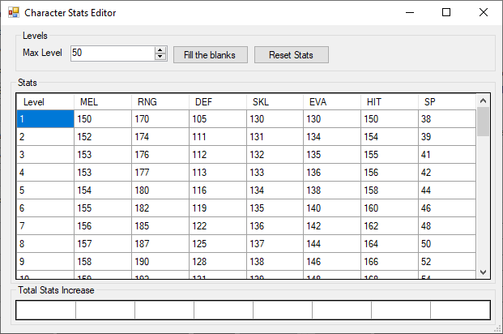

Stat Editor
Edit stats: Will open the stats editor. You can manually select how each level will be like and you can either fill the first 2 rows or the first and last row and then press fill the blanks to automatically complete the sheet.
MEL: Damage multiplier for melee attacks, 100 MEL will produce 100% of damage. As such 150 MEL will cause attacks to do 150% damage. The final multiplier is affected by the pilot Will.
RNG: Damage multiplier for ranged attacks, 100 RNG will produce 100% of damage. As such 150 RNG will cause attacks to do 150% damage. The final multiplier is affected by the pilot Will.
DEF: Armor multiplier, 100 DEF will produce 100% of armor rating. As such 150 DEF will cause armor to do 150% protection. The final multiplier is affected by the pilot Will.
SKL: Chances of critical hits, 100 SKL will increase chances of doing critical hits by 100% while also decreasing chances of getting hit by a critical hit by 100%. Fighting an enemy with 100 SKL while your pilot also has 100 SKL will result in 0% of critical chances. Attack critical chances and other bonuses also affect the final result.
EVA: Flat base evasion, 100 EVA will reduce the chances of being hit by 100%. As such an attack with 150% accuracy with only have a real 50% of hitting. The final evasion rate is affected by the will, terrain and other bonuses.
HIT: Flat base accuracy + 130%, 100 HIT will increase the chances of hitting by 230%. The final hit rate is affected by the will, terrain and other bonuses.
SP: Number of spirit points available. SP are used by Spirits for various effects.